AI-powered Booking.com agent, built with LangGraph Studio, integrating APIs and featuring modern UI components.
Video Link: https://youtu.be/reu5tQTq60A
GitHub Repository: https://github.com/Ashot72/booking.com-UI-agent
Before going through this documentation, you should visit the repository and read the documentation about React-Multi-Agent-Chat-with-LangGraph
In my multi-agent chat application, I created a new agent, Booking.com agent.
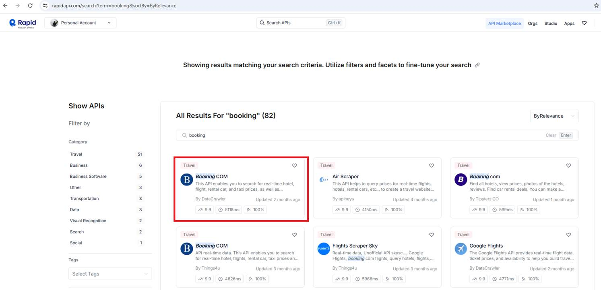
Figure 1
We use the Booking.com API from RapidAPI to access hotel data and integrate it into our booking flow. As you can see, there are several Booking.com implementations.
The Booking.com API on RapidAPI is made by third-party developers. They provide a way to access Booking.com's hotel data. Booking.com doesn't officially support these APIs,
but many people use them successfully in their apps.
We run two projects. The first one is the front-end React app, the UI layer that users interact with. It handles the chat interface, hotel cards, booking forms, and more.
The second project is the backend LangGraph agent app, the AI agent that processes booking logic. It handles trip classification, destination search, hotel search, payments, and more. This app contains the core
business logic and AI workflows. LangGraph now lets you deliver React components from the server to the client, connecting the UI directly with the AI workflows.
Generative user interfaces (Generative UI) allow agents to go beyond text and generate rich user interfaces. This enables creating more interactive and context-aware
Applications where the UI adapts based on the conversation flow and AI responses. LangGraph Platform supports collocating your React components with your graph code.
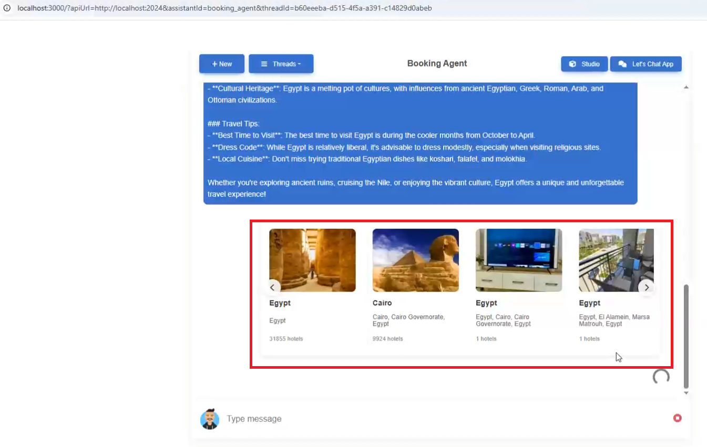
Figure 2
When we type a question such as I want to travel to Egypt, the carousel React components are pushed from the server to the client.
Agent-UIs are a powerful system that allows LangGraph agents to display rich, interactive user interfaces instead of just plain text responses. Think of them as custom
React components that can be dynamically rendered within chat conversations to provide users with interactive forms, data displays, and complex user interfaces.
The system operates through a three-layer architecture:
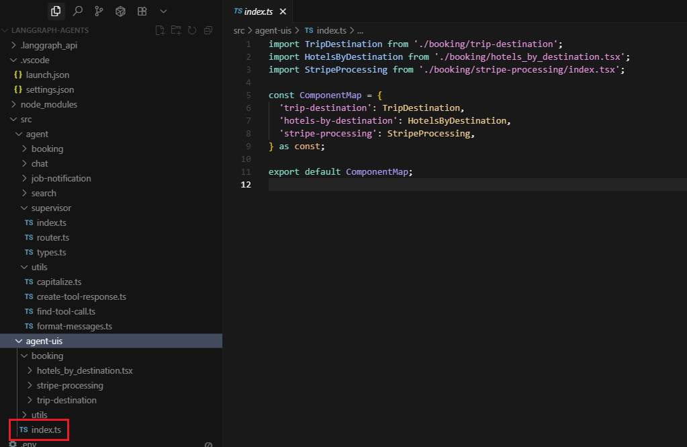
Figure 3
Component Registry: All available UI components are registered in a central map (src/agent-uis/index.ts) that acts like a catalog of available interfaces. Currently, there are three main components:
trip destination selection, hotel listings, and payment processing.
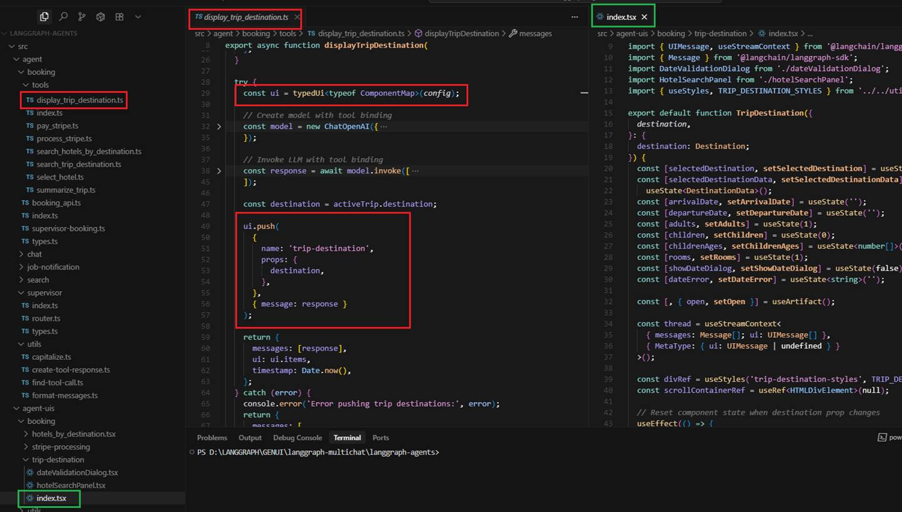
Figure 4
Agent Integration: When an agent needs to display an interactive interface, it uses special tools that push UI components to the chat interface. These tools use the typedUi function to render
React components with specific data and props.
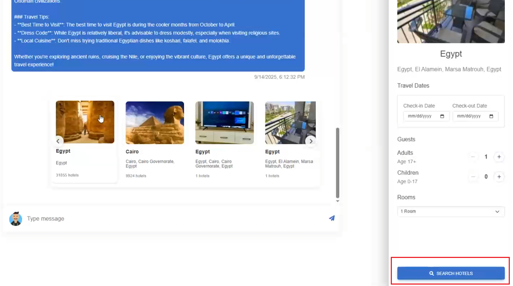
Figure 5
User Interaction: Users can interact with these components (click buttons, fill forms, select options), and their actions are automatically submitted back to the agent as tool calls, creating a
seamless conversation flow.
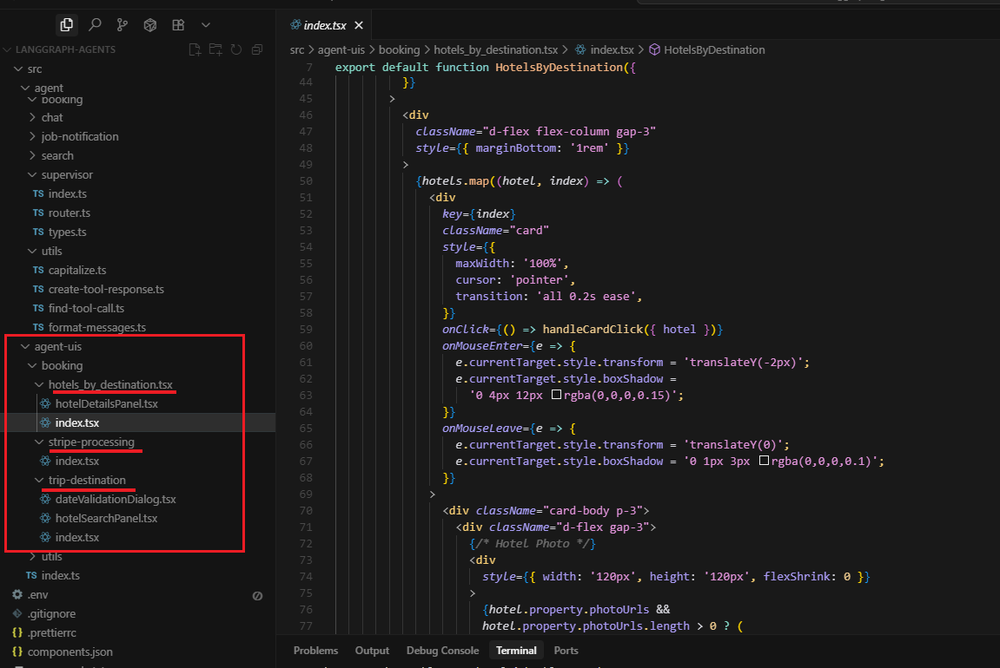
Figure 6
The Three Main Components
Trip Destination Component: This displays a carousel of travel destinations with images and information. Users can select a destination, choose travel dates, specify the number of guests and rooms, and
submit a hotel search request. It includes date validation to ensure users select future dates and that arrival is before departure.
Hotels by Destination Component: After searching for hotels, this component displays a list of available hotels with photos, ratings, prices, and detailed information. Users can click on any hotel to see
more details and select it for booking.
Stripe Processing Component: When a user is ready to pay, this component provides a secure payment interface using Stripe integration. It shows the total amount, payment summary, and handles the actual
payment processing with SSL encryption.
The Magic Behind the Scenes
When a user says something like "I want to book a trip to Paris," the booking agent doesn't just respond with text. Instead:
1. The agent processes the request and searches for Paris destinations
2. It pushes the trip destination UI component with Paris data
3. The user sees an interactive interface with Paris options, date pickers, and guest selectors
4. When the user fills out the form and clicks "Search Hotels," the component submits this data back to the agent
5. The agent processes the hotel search and pushes the hotels listing component
6. This creates a smooth, interactive booking flow without the user having to type complex commands
This system transforms traditional chatbot interactions from simple text exchanges into rich, app-like experiences. Instead of users having to remember specific commands or navigate through multiple steps
of text, they get intuitive interfaces that guide them through complex processes like booking travel, making payments, or managing data. The agent-uis system essentially bridges the gap between
conversational AI and traditional web applications, providing the best of both worlds: the natural language understanding of AI agents with the user-friendly interfaces of modern web apps.
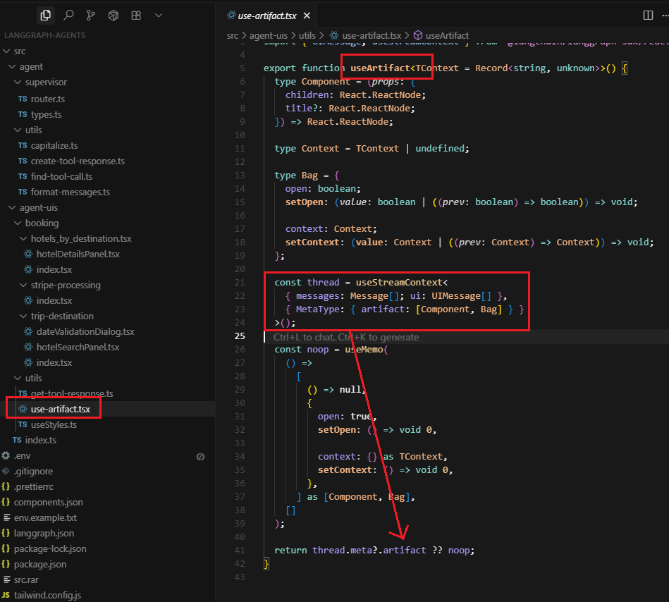
Figure 7
The useArtifact hook is a custom React hook that manages panel state, integrates with LangGraph's thread system, and provides a clean API for creating interactive side panels that feel native to the chat interface.
It essentially a bridge between the client application's artifact system and the individual UI components that need to use it. The client app does the heavy lifting of setting up the artifact infrastructure,
and the hook provides a clean API for components to access it.
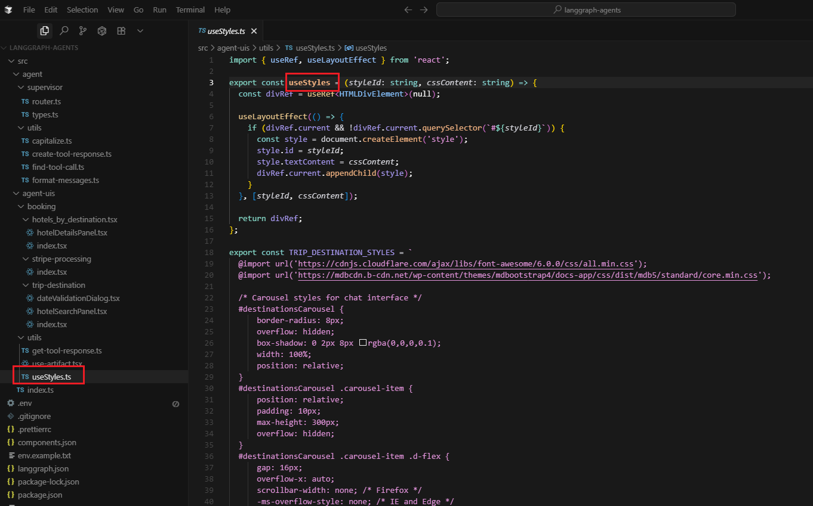
Figure 8
We're using Bootstrap because it provides a comprehensive design system that's well-tested and familiar to developers. The useStyles hook is our way of making Bootstrap work in the
shadow DOM context that LangGraph's UI system creates. The key point is that this is specifically for shadow DOM isolation - in the main app, components can access global Bootstrap styles normally,
but when our agent-uis components get rendered through LangGraph's UI system, they end up in a shadow DOM context where they can't access those global styles. That's why we need to inject the
Bootstrap CSS directly into each component. If we were starting fresh, we might consider Tailwind or class-names (CN), since they work out of the box, but for now, useStyles is our bridge between Bootstrap and the
shadow DOM isolation that our agent-uis system requires.
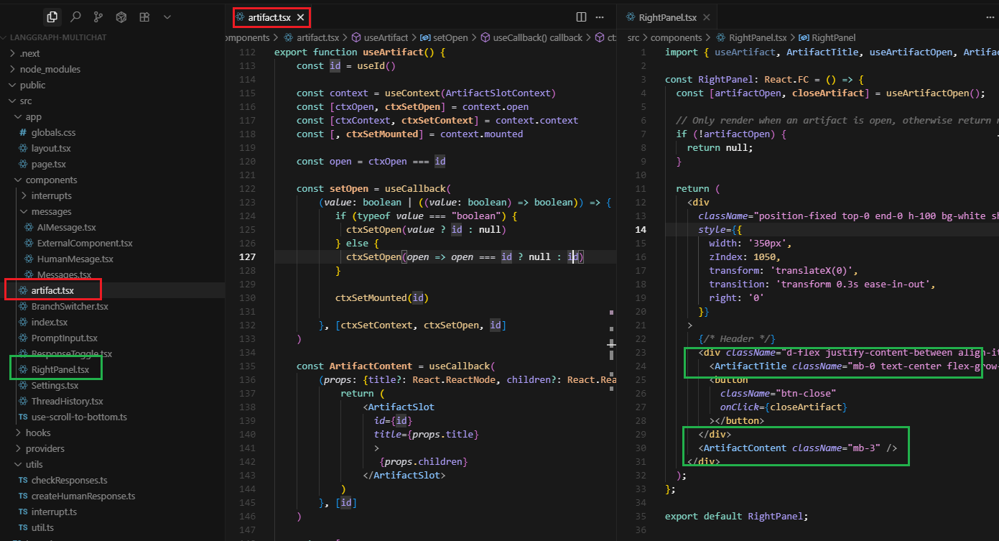
Figure 9
This is the client app. The artifact system in artifact.tsx is a React portal-based UI system that allows components to render content in a dedicated right panel. It's essentially a teleportation system
for React components - you can create content anywhere in your app and have it appeared in a specific location (the right panel). The artifact system is essentially a smart wrapper around React portals
that adds state management, unique identification, and a clean API for creating side panels and modal-like experiences.
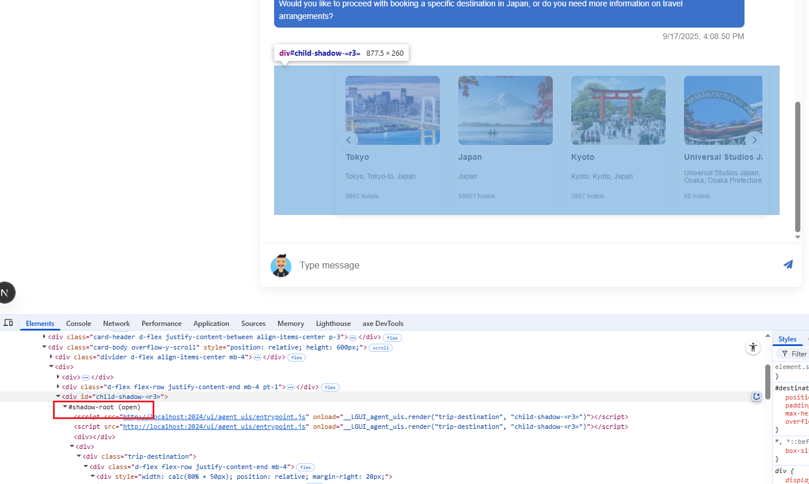
Figure 10
Our agent-ui components are loaded from the client side as shadow DOM.
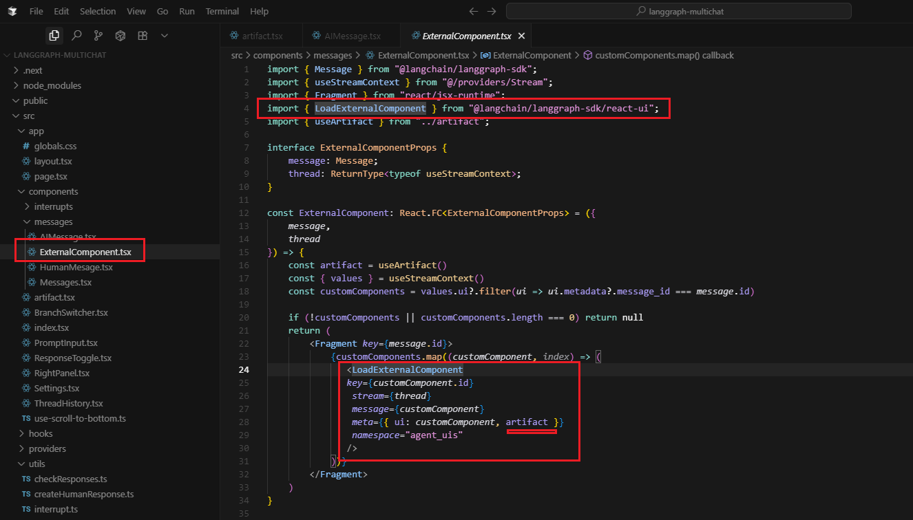
Figure 11
LangGraph Platform will automatically bundle your UI components code and styles and serve them as external assets that can be loaded by the LoadExternalComponent component.
Some dependencies such as react and react-dom will be automatically excluded from the bundle. The ExternalComponent is essentially a dynamic component loader that enables the
LangGraph system to inject custom UI components into your application based on the conversation context and message metadata.
The artifact in meta enables external components to create sophisticated, interactive UI experiences that integrate seamlessly with your application's portal system.
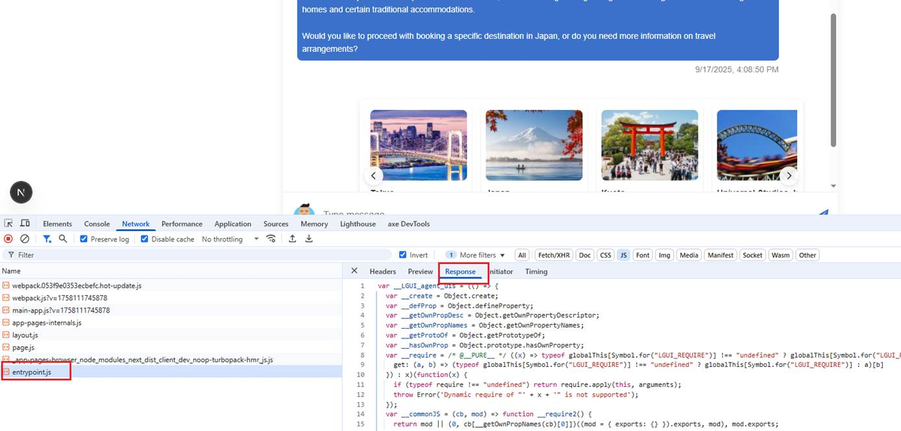
Figure 12
The entrypoint.js is a dynamically generated JavaScript file that serves as the entry point for external UI components in the LangGraph system. It's created by the LangGraph SDK to load and
execute agent-UI components. The generated entrypoint.js is essentially the bridge between your application and external agent-UI components, handling all the complexity of dynamic loading, module
resolution, and component execution while providing a clean interface through the ExternalComponent.